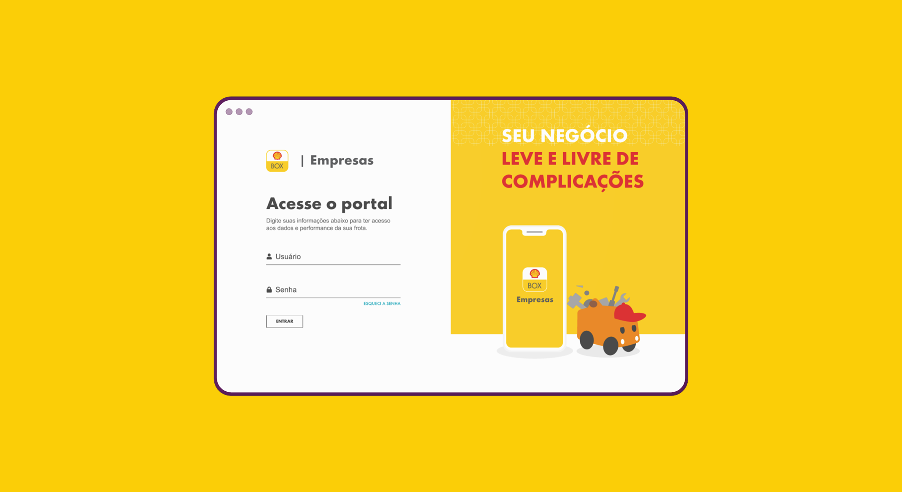
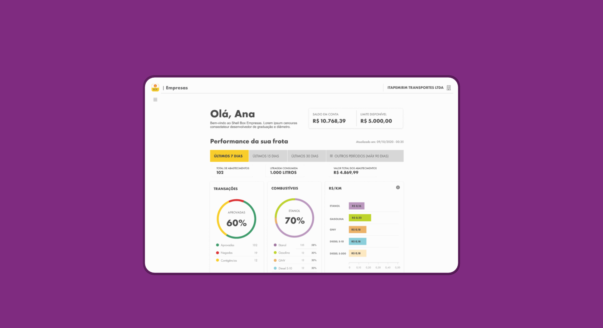
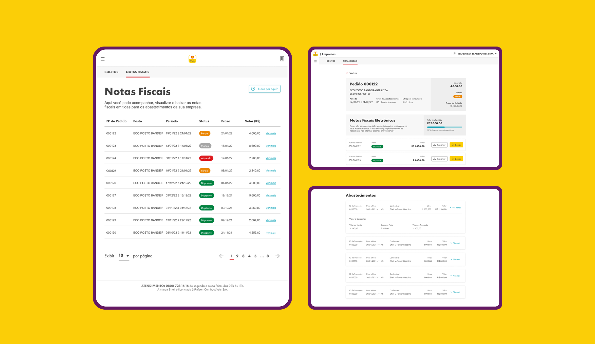
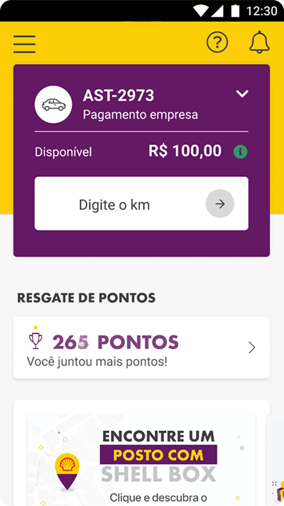
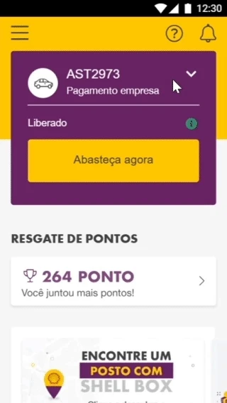
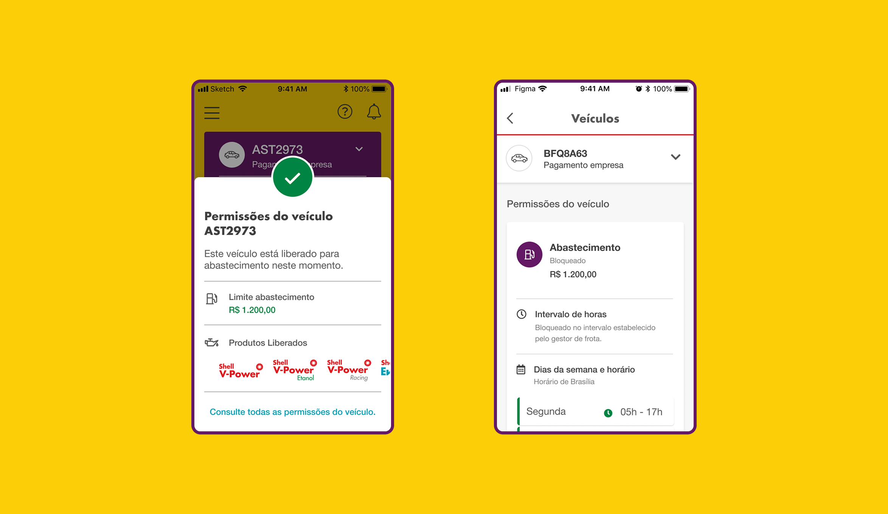

ShellBox Empresas
Único designer da frente B2B de um produto de gestão de frotas recém-lançado, competindo com incumbentes consolidados.
- Papel
- Product Designer
- Empresa
- Raízen — joint venture Shell + Cosan
- Período
- 8 meses — agosto de 2021 a abril de 2022
- Equipe de Design
- Seis designers e uma UX researcher cross no ShellBox; o único na frente B2B
- Tríade
- Product designer, product manager e tech lead

Resumo
O ShellBox Empresas tinha poucos meses de mercado e concorrentes com décadas de operação. O ShellBox tinha seis designers, nenhum deles na frente B2B — entrei como o primeiro.
Em oito meses: recoloquei pesquisa com usuários na decisão de roadmap, desenhei a recolha de notas fiscais ponta a ponta entre três sistemas, redesenhei o fluxo de abastecimento do app — onde 18% dos motoristas erravam o código da bomba — e levei as permissões de abastecimento para a tela do motorista.
No período, o produto cresceu 93% em placas ativadas e 180% em transações.
Contexto
Um produto novo em um mercado maduro
O ShellBox Empresas apoia gestores e motoristas de frota na gestão financeira e operacional do abastecimento. Quando cheguei, o produto tinha poucos meses de lançamento. O ShellBox como um todo tinha seis designers e uma UX researcher cross, mas ninguém dedicado à frente B2B.
Competíamos com players consolidados em gestão de frota, que estavam digitalizando seus serviços de cartão de abastecimento. Precisávamos alcançar paridade e, ao mesmo tempo, oferecer algo que eles não tinham.
Tínhamos um diferencial real: integração direta com a bomba. O pagamento acontecia no app, sem cartão físico.
Eu era o primeiro designer no produto e não conhecia o mercado de frotas. Comecei pela pesquisa.
Pesquisa
Recolocando o usuário na decisão de roadmap
O time já tinha entregue as funcionalidades essenciais e precisava reestruturar o roadmap. A discussão sobre o que priorizar acontecia sem evidência de campo.
Conduzi uma pesquisa exploratória com entrevistas em profundidade com gestores de frota — os tomadores de decisão na contratação do produto.
O que encontramos mudou a priorização: gestão remota e presencial têm necessidades diferentes, frotas pequenas e grandes operam de formas distintas, e a pandemia havia alterado as rotinas de acompanhamento.
Uma descoberta virou entrega direta. Gestores precisavam enxergar desempenho por período customizado, então desenhamos o dashboard da home: volume de transações, uso de combustível e custo por quilômetro.
A partir dali a pesquisa passou a informar não só o que construir, mas por que e como.

Dashboard da home: desempenho da frota por período, com transações, consumo e custo por quilômetro.
Entregas
Recolha de notas fiscais
A oportunidade veio do time comercial: recolher as notas fiscais dos abastecimentos era um processo manual e lento, tanto para as empresas quanto para os postos. Organizar os cupons de cada abastecimento e solicitar a emissão da nota ao posto eram os maiores gargalos.
Desenhei o fluxo ponta a ponta conectando três sistemas: o app, que registrava as transações; o Conexão Shell, por onde os postos subiam as notas; e o Portal de Gestão, onde o gestor acompanhava, baixava e contestava.
Era valor financeiro direto para o cliente — e um argumento comercial que os concorrentes não tinham.

Acompanhamento das notas fiscais no Portal de Gestão, com status por pedido e contestação.
Fluxo de abastecimento
Cerca de 18% dos motoristas digitavam o código da bomba incorretamente.
Olhando o fluxo, a causa era de design: digitar a quilometragem do veículo e digitar o código da bomba eram etapas visualmente parecidas e em sequência. O motorista, parado no posto com o carro na bomba, confundia as duas.
Redesenhei a etapa de quilometragem para separar as duas entradas. Não acompanhei a taxa de erro depois do lançamento: fui alocado em outro projeto antes da medição.

Versão anterior.

Nova versão, com as duas entradas separadas.
Permissões de abastecimento
Gestão de frota exige parametrizar quem pode abastecer: limite de valor, dias da semana, horários e tipo de combustível.
O gestor definia as regras, mas o motorista não as via. O resultado era previsível: ele descobria o bloqueio na bomba, e a ligação para o gestor virava rotina.
Levei as permissões para o app do motorista. Ele passou a se planejar antes de sair, e a comunicação com o gestor deixou de ser reativa.

Permissões visíveis ao motorista: limite e produtos liberados, e o detalhe por intervalo de horas e dias da semana.
Resultados
O que aconteceu em oito meses
Números do produto nos oito meses em que atuei. O crescimento é do time — Comercial, Produto, Engenharia, Dados e Design. Minha contribuição está nas frentes descritas acima.
O que mudou
No time: a pesquisa com usuários voltou a informar a priorização do roadmap.
Em mim: aprendi a construir e manter produto ao lado de áreas com conhecimento muito específico, e a traduzir esse conhecimento em decisão de design.